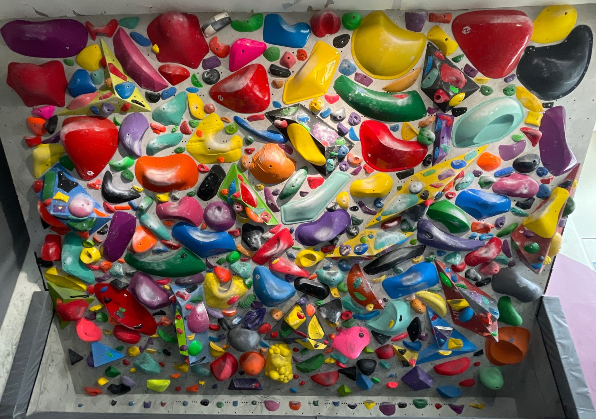

Climbio Lab
岩點偵測、外框精修與 3D 岩壁重建。

開放資料集
私人牆面留在自己的裝置。你可以選擇以 CC BY-SA 4.0 公開牆面照片與岩點修正。公開資料可供任何人下載、用於模型訓練，公開後無法收回。
記錄的修正
誤偵測、漏偵測與外框偏差。被修改的岩點會保留原本與修正後的外框。
公開的牆面資料
移除位置中繼資料的牆面照片、最終外框、低信心的偵測結果、是否完成逐顆檢查，以及工具與模型版本。拖曳與復原紀錄、SAM2 中間候選和單顆岩點的編輯時間不列入資料集。